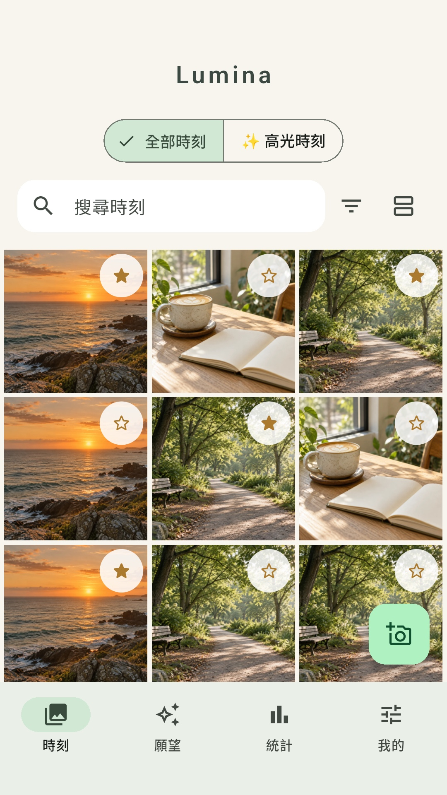
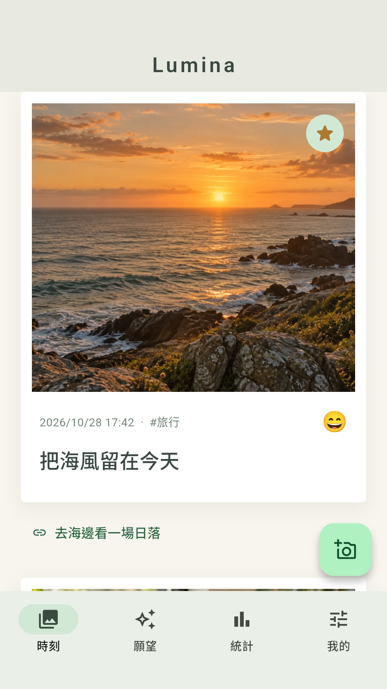
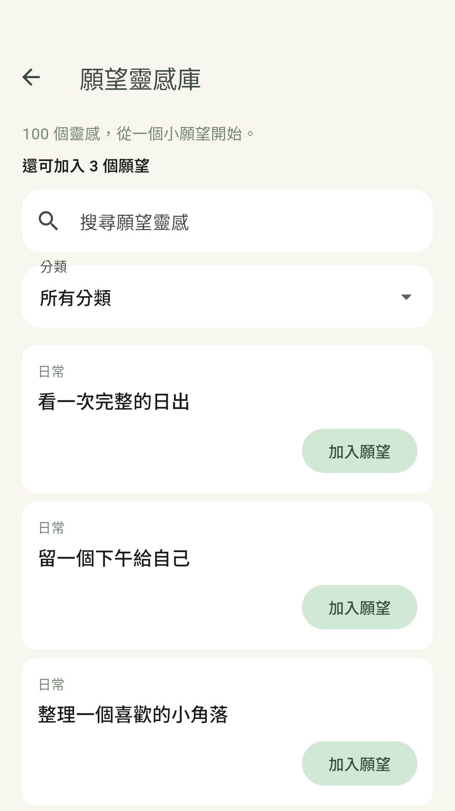
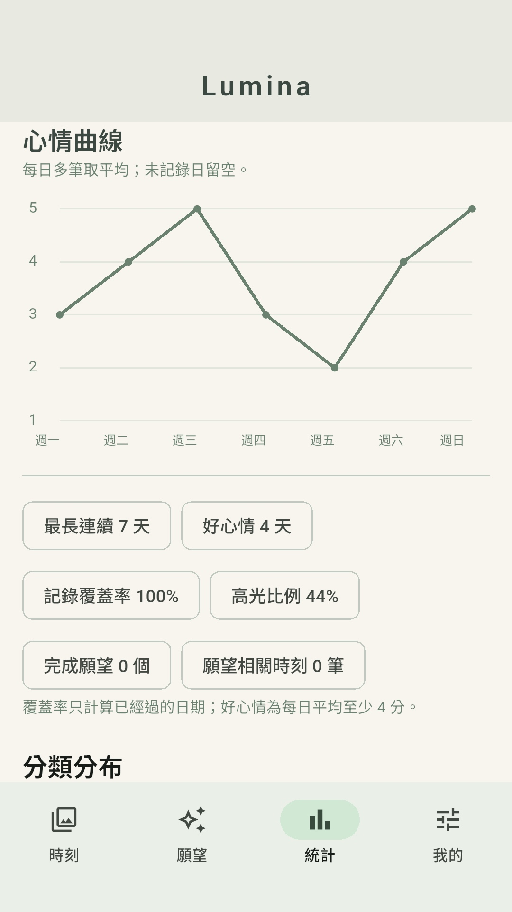
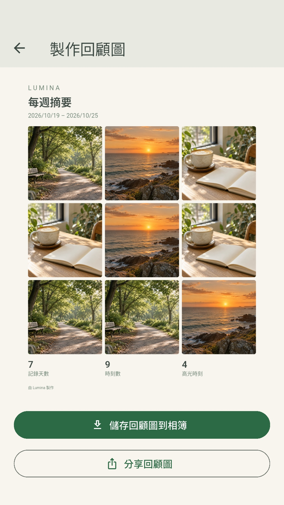

讓記錄輕一點
拍照或從相簿選一張，寫下 40 字內的摘要；想多說一點時，還有 500 字的備註空間。
拾光人生手帳 · ANDROID 測試中
一張照片，一句心情。從今天的小事，到一直想完成的願望，讓生活有個可以慢慢翻看的地方。
尚未公開上架 Google Play。iOS 版本規劃中。

不必寫很多，也能留下很多。
照片 × 心情 × 願望01 — YOUR MOMENTS
不用從空白長文開始。選張照片、留一句話，今天就有了自己的位置。

今天的夕陽，也想留給明天。
拍照或從相簿選一張，寫下 40 字內的摘要；想多說一點時，還有 500 字的備註空間。
五種心情、12 種生活分類，搭配日期與時分。把感受留下，也把時間記清楚。
單欄卡片或三欄照片牆，由你選擇。用文字、分類、心情或日期篩選，再用星星收藏高光。
02 — YOUR WISHES
先留下想做的事，再記下走向它的每一步。
一般日記也能關聯願望，過程同樣值得記住。

03 — YOUR REFLECTIONS
每週、每月的記錄摘要與心情曲線，幫你看見生活的節奏。挑選喜歡的照片，做成九宮格或手帳回顧，留在相簿，也能透過系統分享。
心情曲線僅供個人回顧，不提供心理健康診斷。分享回顧圖預設不含心情曲線，由你決定是否加入。


04 — YOUR SPACE
日記與照片保存在手機裡，核心記錄免註冊、離線可用，也沒有廣告。帳號版本（0.5.0 起）可選用 Google／Email 登入，帳號資料由 Firebase／Google 處理；手帳不會隨登入上傳或同步。
可以手動匯出包含文字與照片的 ZIP，並在需要時還原。請定期備份：移除 App 會刪除本機手帳，資料與 ZIP 未額外加密，外部副本需自行妥善管理。
閱讀完整隱私政策 ↗A FEW THINGS TO KNOW
目前 Android 版本仍在測試，尚未向所有 Google Play 使用者開放。點選「申請參與 Android 測試」即可寄信聯絡我們，是否可加入會由開發者回覆；此入口不會直接安裝 App。
Android 10 以上。介面支援繁體中文、簡體中文、英文、日文與韓文，可跟隨手機或在 App「我的」切換。你寫下的內容維持原文。iOS 版本仍在規劃中。
目前的 MVP 免費版沒有廣告、付費牆或登入要求。帳號版本可選用 Google／Email 登入，也可繼續使用本機手帳。每篇記錄一張照片，同時最多保留 5 個進行中願望。
沒有雲端同步，也不會自動發布到 Instagram 或 Facebook。匯出圖片後，可由系統分享交給你選擇的 App，最後發布仍由你確認。換手機前請先手動備份。